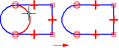

Trim command
Use the Trim command  to trim open and closed elements either to the closest intersection in both directions or to the selected element.
to trim open and closed elements either to the closest intersection in both directions or to the selected element.

How do I
Trim an elementDraw a corner by trimming and extending elements
Use the Trim command to trim open and closed elements either to the closest intersection in both directions or to the selected element.
